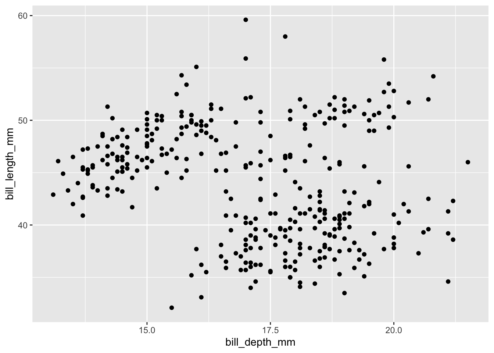
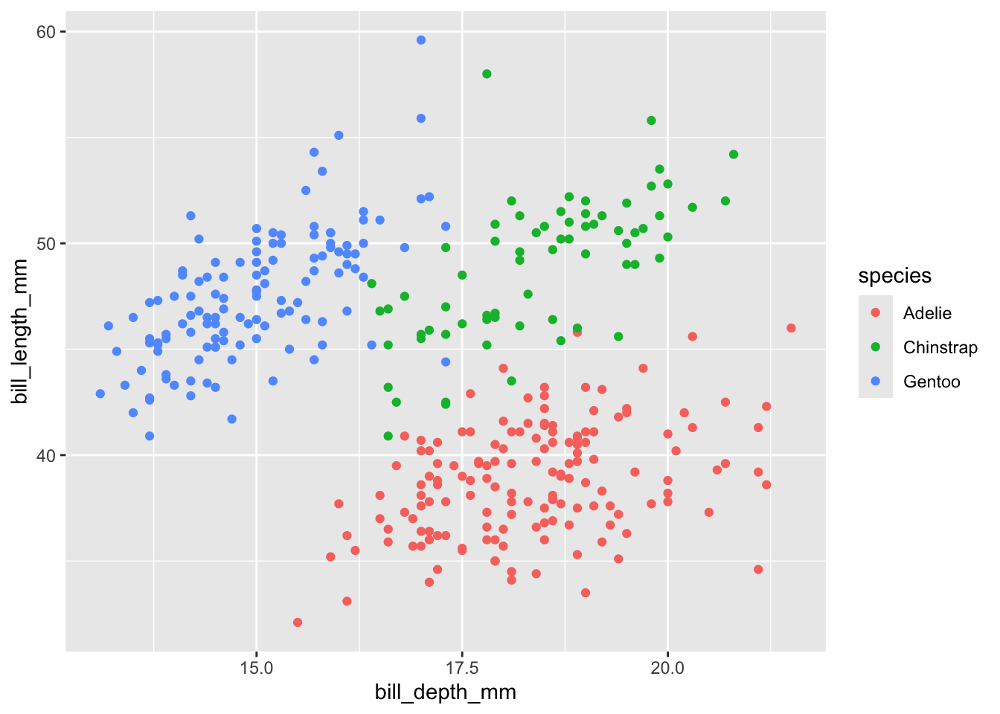
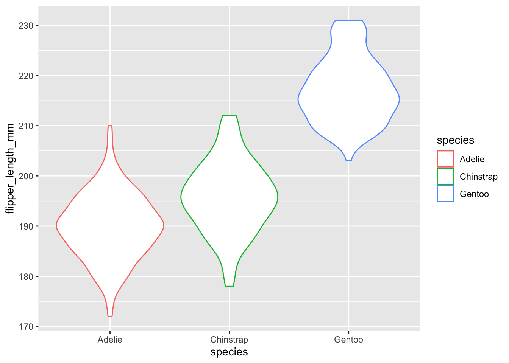
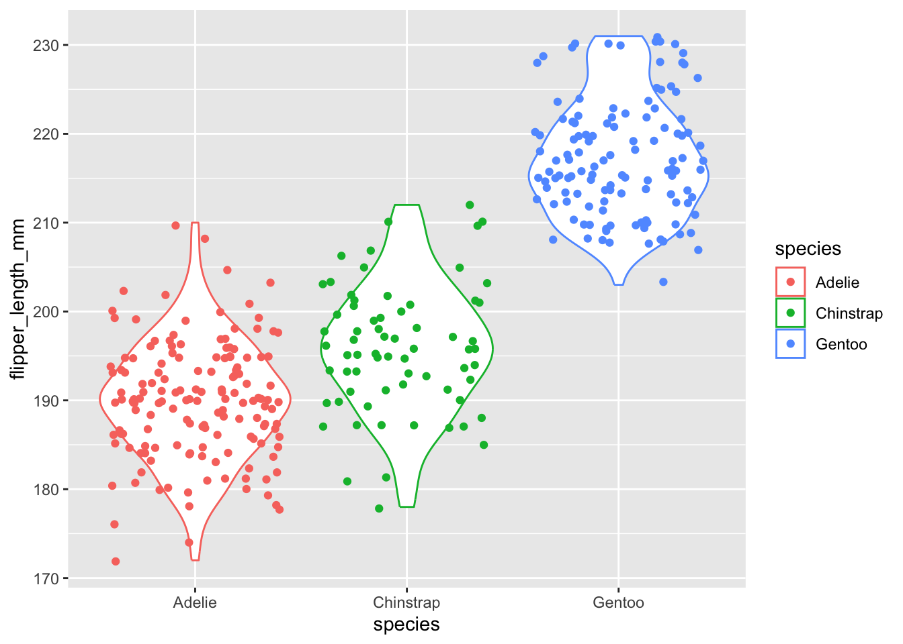
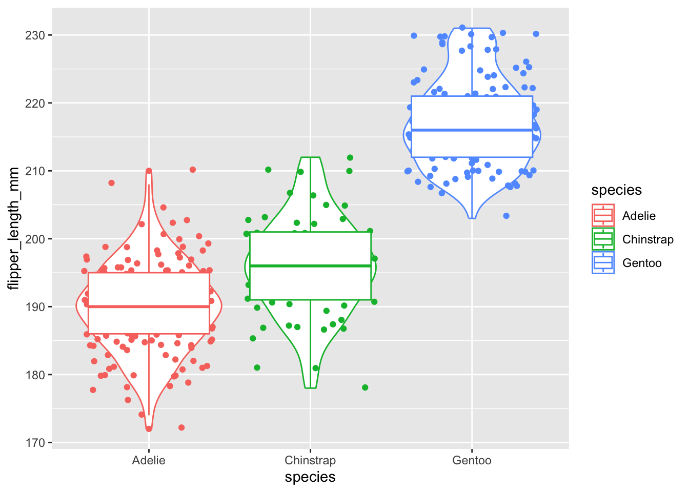
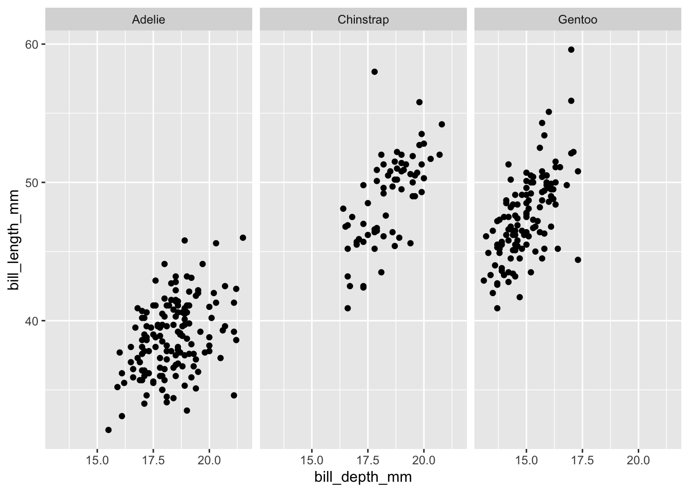
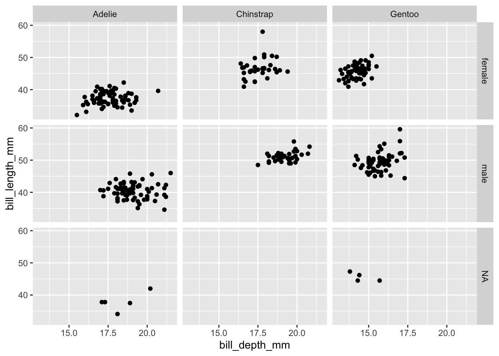
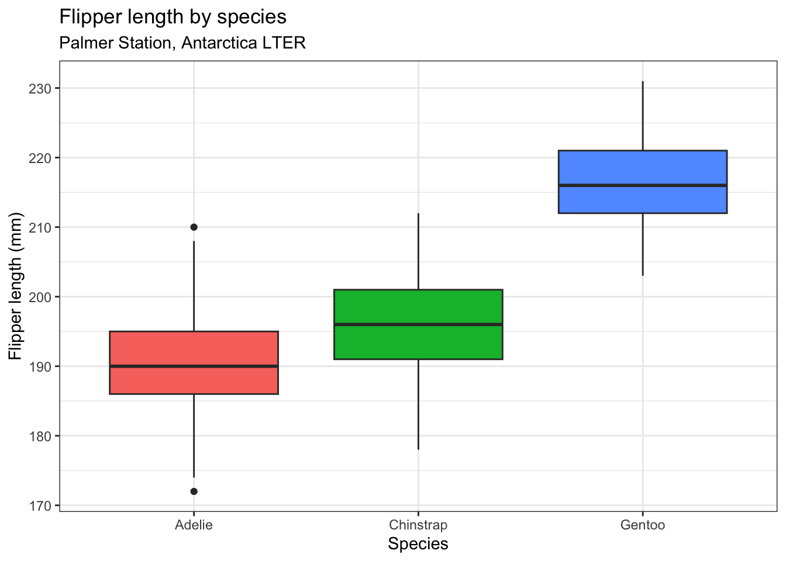

Chapter 10 Lab 9: Advanced ggplot2 - Facets, Themes, and Layouts
Objectives:
- To build scatterplots for continuous-vs-continuous relationships
- To build boxplots and violin plots for distributions across categories
- To refine axes, scales, and custom themes
- To use facetting to display complex, multi-panel data sets
In Lab 4 we covered histograms and bar plots. Today we go further: relationships between continuous variables, distributions across groups, and multi-panel layouts — the kind of polish you’ll want for a scientific paper or presentation.
10.1 Scatterplots
Scatterplots represent continuous vs. continuous variables, and are used to look for correlations.
library(ggplot2)
library(palmerpenguins)
data(penguins)
ggplot(data = penguins, aes(x=bill_depth_mm, y=bill_length_mm)) + geom_point()## Warning: Removed 2 rows containing missing values or values outside the scale range (`geom_point()`).
This is hard to read as-is — no clear trend appears. Coloring by a category often reveals a hidden pattern (this is called Simpson’s Paradox, when a trend appears, disappears, or reverses when a grouping variable is introduced):
## Warning: Removed 2 rows containing missing values or values outside the scale range (`geom_point()`).
Question 1
-
Build a scatterplot of
flipper_length_mm(x) versusbody_mass_g(y), colored byspecies - Is there a positive, negative, or no relationship? Does it differ by species?
10.2 Boxplots and violin plots
These combine a histogram-like view with a categorical x-axis, illustrating the distribution of a continuous variable across categories.
## Warning: Removed 2 rows containing non-finite outside the scale range (`stat_ydensity()`).
Add the raw data points with geom_jitter():
ggplot(data = penguins, aes(x=species, y=flipper_length_mm, color=species)) + geom_violin() + geom_jitter()## Warning: Removed 2 rows containing non-finite outside the scale range (`stat_ydensity()`).## Warning: Removed 2 rows containing missing values or values outside the scale range (`geom_point()`).
Add a boxplot on top to summarize the median and quartiles:
ggplot(data = penguins, aes(x=species, y=flipper_length_mm, color=species)) + geom_violin() + geom_jitter() + geom_boxplot()## Warning: Removed 2 rows containing non-finite outside the scale range (`stat_ydensity()`).## Warning: Removed 2 rows containing non-finite outside the scale range (`stat_boxplot()`).## Warning: Removed 2 rows containing missing values or values outside the scale range (`geom_point()`).
The thick middle line is the median; the box edges are the 25th and 75th percentiles; the whiskers approximate a 95% range for comparing medians.
Question 2
-
Build a boxplot of
bill_length_mmacrossspecies - Which species has the widest spread (most variable) bill length? Which has the narrowest?
- Connect this back to Lab 6: if you ran an ANOVA on this variable, would you predict a significant result based on this plot alone? Why?
10.3 Facetting: multiple panels for complex data
Facetting splits one plot into a grid of small panels, one per category — extremely useful for comparing patterns across many groups at once (e.g., decadal climate trends across multiple regions).
ggplot(data = penguins, aes(x=bill_depth_mm, y=bill_length_mm)) +
geom_point() +
facet_wrap(~species)## Warning: Removed 2 rows containing missing values or values outside the scale range (`geom_point()`).
facet_wrap() splits by one variable. facet_grid() splits by two variables at once (rows and columns):
ggplot(data = penguins, aes(x=bill_depth_mm, y=bill_length_mm)) +
geom_point() +
facet_grid(sex ~ species)## Warning: Removed 2 rows containing missing values or values outside the scale range (`geom_point()`).
Question 3
-
Facet the boxplot from Question 2 by
islandusingfacet_wrap() - Does the pattern you observed in Question 2 hold across all islands, or does it change? Explain.
10.4 Refining axes, scales, and themes
ggplot(data = penguins, aes(x=species, y=flipper_length_mm, fill=species)) +
geom_boxplot() +
scale_y_continuous(breaks = seq(170, 235, by = 10)) +
labs(title = "Flipper length by species",
subtitle = "Palmer Station, Antarctica LTER",
x = "Species", y = "Flipper length (mm)") +
theme_bw() +
theme(legend.position = "none")## Warning: Removed 2 rows containing non-finite outside the scale range (`stat_boxplot()`).
scale_y_continuous(breaks = ...)controls exactly where axis tick marks appeartheme_bw()gives a clean white-background theme, common in publicationstheme(legend.position = "none")removes a redundant legend (here, color duplicates the x-axis)
Question 4
- Take your faceted plot from Question 3 and add a title, subtitle, clean axis labels, and a theme of your choice
- Compare it to the very first, unstyled scatterplot at the top of this lab. In 2-3 sentences, explain what specifically makes the final version more “publication-ready.”